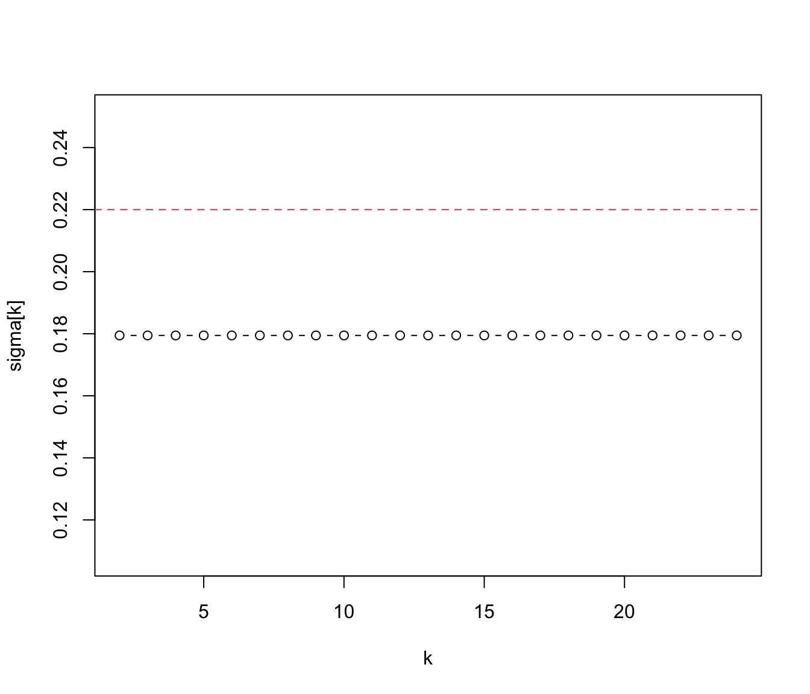

stats.xbar.one.RdThese functions are used to compute statistics required by the xbar chart for one-at-time data.
stats.xbar.one(data, sizes)
sd.xbar.one(data, sizes, std.dev = c("MR", "SD"), r = 2, ...)
limits.xbar.one(center, std.dev, sizes, nsigmas = NULL, conf = NULL)the observed data values
sample/group center statistic.
samples sizes. Not needed, size = 1 is used.
number of successive pairs of observations for computing the standard deviation based on moving ranges of r points.
within group standard deviation. Optional for sd.xbar.one function, required for limits.xbar.one. See details.
a numeric value specifying the number of sigmas to use for computing control limits. It is ignored when the conf argument is provided.
a numeric value in \((0,1)\) specifying the confidence level to use for computing control limits.
catches further ignored arguments.
Methods available for estimating the process standard deviation:
"MR" = moving range: this is estimate is based on the scaled mean of moving ranges
"SD" = sample standard deviation: this estimate is defined as sd(x)/cd(n), where n is the number of individual measurements of x.
The function stats.xbar.one returns a list with components statistics and center.
The function sd.xbar.one returns std.dev the standard deviation of the statistic charted.
The function limits.xbar.one returns a matrix with lower and upper control limits.
Montgomery, D.C. (2013) Introduction to Statistical Quality Control, 7th ed. New York: John Wiley & Sons.
Ryan, T. P. (2011), Statistical Methods for Quality Improvement, 3rd ed. New York: John Wiley & Sons, Inc.
Wetherill, G.B. and Brown, D.W. (1991) Statistical Process Control. New York: Chapman & Hall.
# Water content of antifreeze data (Wetherill and Brown, 1991, p. 120)
x = c(2.23, 2.53, 2.62, 2.63, 2.58, 2.44, 2.49, 2.34, 2.95, 2.54, 2.60, 2.45,
2.17, 2.58, 2.57, 2.44, 2.38, 2.23, 2.23, 2.54, 2.66, 2.84, 2.81, 2.39,
2.56, 2.70, 3.00, 2.81, 2.77, 2.89, 2.54, 2.98, 2.35, 2.53)
# the Shewhart control chart for one-at-time data
# 1) using MR (default)
qcc(x, type="xbar.one", data.name="Water content (in ppm) of batches of antifreeze")
#> ── Quality Control Chart ─────────────────────────
#>
#> Chart type = xbar.one
#> Data (phase I) = x
#> Number of groups = 34
#> Group sample size = 1
#> Center of group statistics = 2.569706
#> Standard deviation = 0.1794541
#>
#> Control limits at nsigmas = 3
#> LCL UCL
#> 2.031344 3.108068
# 2) using SD
qcc(x, type="xbar.one", std.dev = "SD", data.name="Water content (in ppm) of batches of antifreeze")
#> ── Quality Control Chart ─────────────────────────
#>
#> Chart type = xbar.one
#> Data (phase I) = x
#> Number of groups = 34
#> Group sample size = 1
#> Center of group statistics = 2.569706
#> Standard deviation = 0.2216795
#>
#> Control limits at nsigmas = 3
#> LCL UCL
#> 1.904667 3.234744
# "as the size increases further, we would expect sigma-hat to settle down
# at a value close to the overall sigma-hat" (Wetherill and Brown, 1991,
# p. 121)
sigma = NA
k = 2:24
for (j in k)
sigma[j] = sd.xbar.one(x, k=j)
plot(k, sigma[k], type="b") # plot estimates of sigma for
abline(h=sd(x), col=2, lty=2) # different values of k
